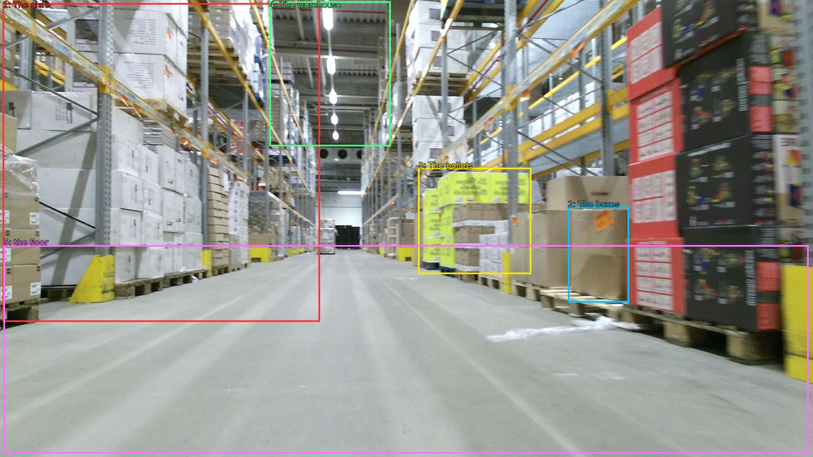

The image shows a large warehouse with a long, narrow aisle. The aisle is lined with rows of shelves on both sides, each filled with boxes and pallets. The boxes are of different sizes and colors, and some are stacked on top of each other. The pallets are yellow and appear to be made of metal. The warehouse has a high ceiling with overhead lights, and the floor is made of concrete. The overall atmosphere of the warehouse is busy and organized.

Original · Caption raw · Grounding raw · Koordinate
Številke so lokalni ID regije. Dolge slikovne oznake so skrajšane; spodaj so celotne fraze. Napovedane regije se lahko prekrivajo ali opisujejo skupine.
| ID | Celotna fraza | bbox xyxy |
|---|---|---|
| 1 | The aisle | [6.71999979019165, 7.020000457763672, 755.5199584960938, 760.8600463867188] |
| 2 | The boxes | [1341.1199951171875, 488.70001220703125, 1485.1199951171875, 714.4200439453125] |
| 3 | The pallets | [987.8399658203125, 396.9000244140625, 1254.719970703125, 647.4600219726562] |
| 4 | The warehouse | [636.47998046875, 3.7800002098083496, 922.5599975585938, 345.0600280761719] |
| 5 | the floor | [8.639999389648438, 579.4200439453125, 1909.43994140625, 1071.9000244140625] |